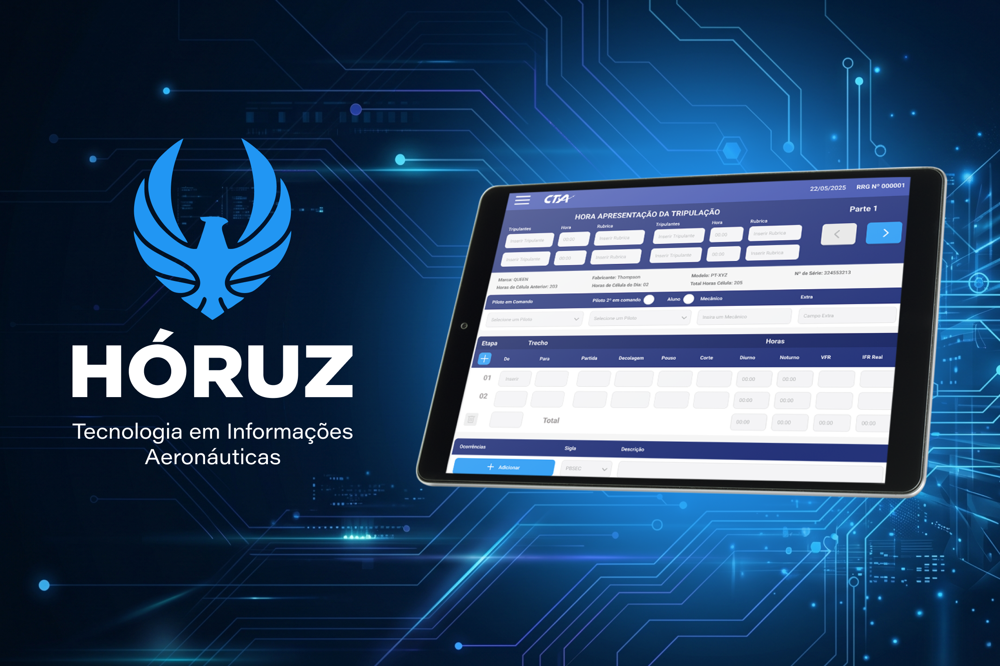
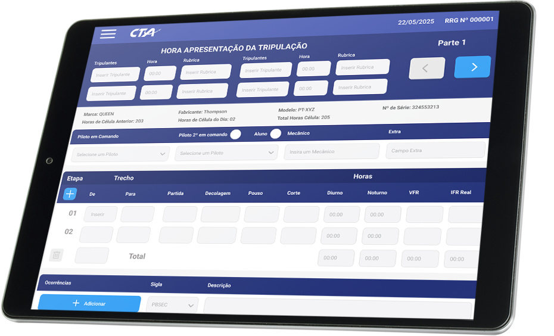
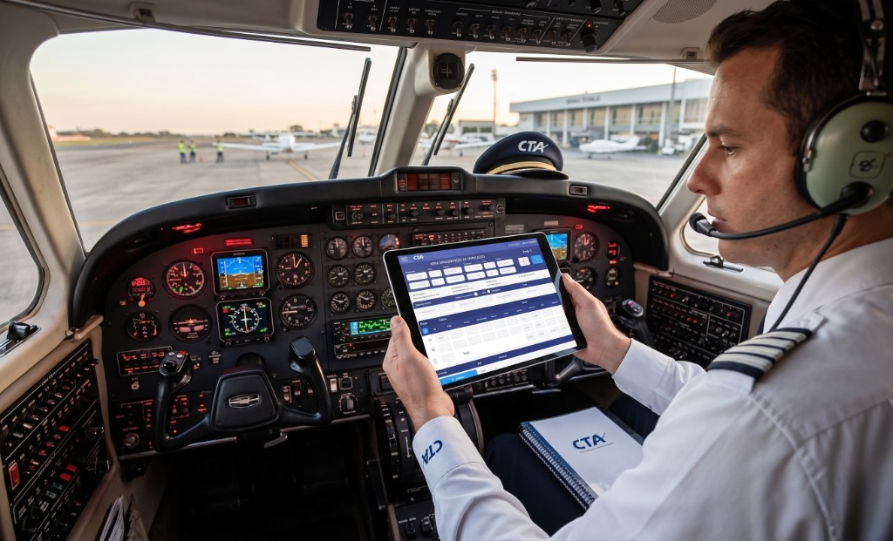

Diário de Bordo Aeronáutico
Plataforma estratégica de dados para modernizar o diário de bordo da aviação geral no Brasil.
O Hóruz eDB nasceu para transformar um processo manual e crítico em uma operação digital, segura e escalável. No lugar de apenas digitalizar formulários, o projeto foi desenhado como um ecossistema de dados para conformidade regulatória, eficiência operacional e impacto socioambiental.

01. Desafios
O setor de aviação geral no Brasil, especialmente na Região Norte, ainda operava com processos analógicos e ineficientes.
O principal ponto de fricção era o Diário de Bordo preenchido manualmente, gerando riscos de conformidade, lentidão operacional e alto custo de papel e armazenamento físico.
Também havia impacto ambiental sem mecanismos de metrificação de GEE e ausência de comunicação efetiva entre aeronaves privadas e governo em cenários de emergência, como incêndios florestais.
02. Solução
Como Product Designer e CDO, defini uma estratégia além da digitalização do papel: conformidade como experiência com validações em tempo real segundo normas da ANAC; decisão de uso em Tablet 10.4 para legibilidade e ergonomia em cabine; abordagem Green UX com metrificação de carbono no fluxo do diário para converter dado operacional em ativo ambiental; e arquitetura de informação orientada a hiperautomação para evoluir ao Sistema Oziris de gestão completa.
Screenshots & Protótipo

Interface do Hóruz eDB em tablet, otimizada para uso operacional em cabine e preenchimento com foco em conformidade.

Simulação do uso do EDB no cockpit do piloto
03. Resultados e Conclusão
A solução final foi o Hóruz eDB, uma plataforma simples e intuitiva com autenticação segura, armazenamento centralizado e operação autorizada pela ANAC. O produto integrou impacto social e ambiental com suporte ao combate a queimadas na Amazônia via mensagens em tempo real para mobilizar aeronaves privadas, além de modelo SaaS B2B escalável por horas voadas.
Como impacto, houve diferenciação de mercado como startup pioneira da Região Norte em eDB, eliminação total de papel, redução de custos logísticos e planejamento de expansão nacional com integração futura de Blockchain e banco de talentos (Programa Turnover).